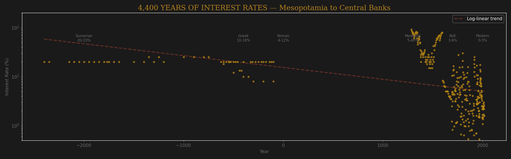
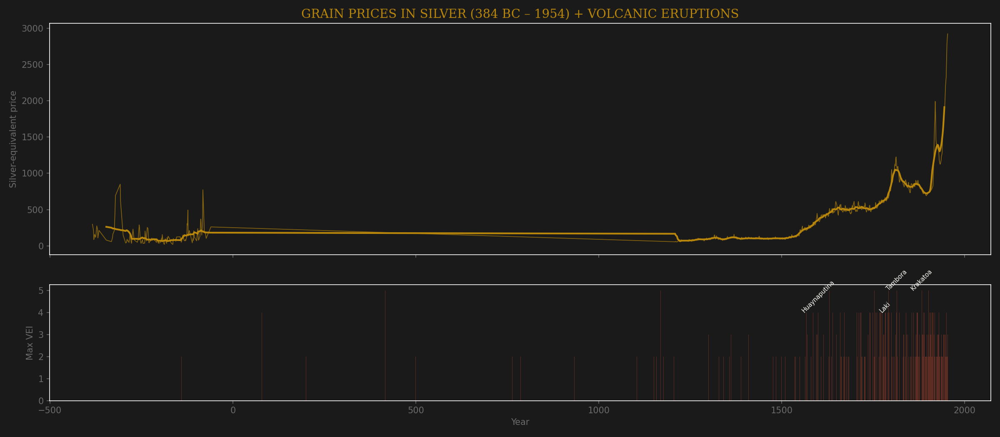
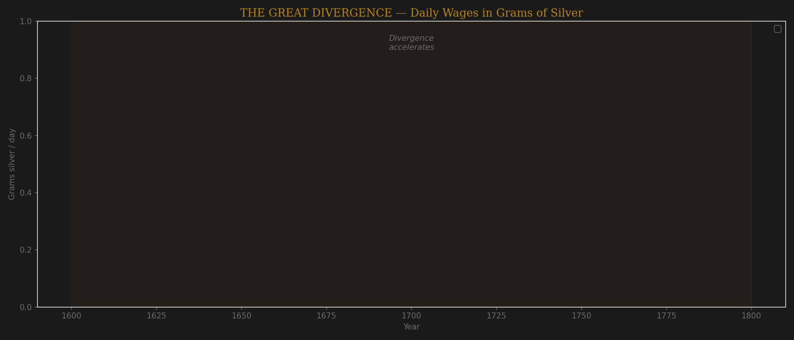
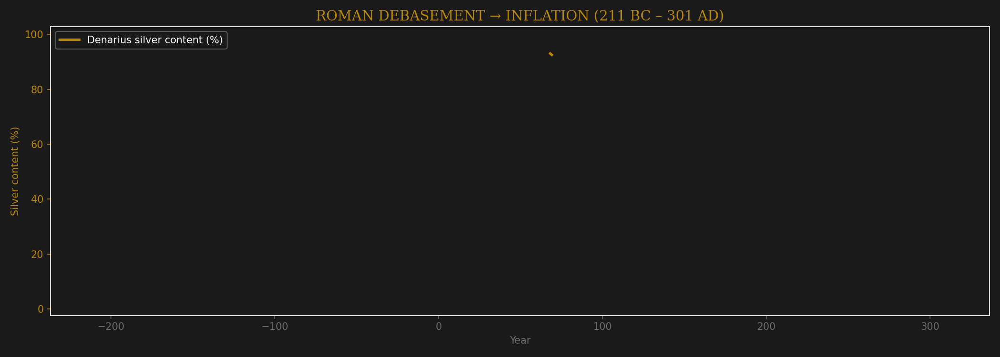
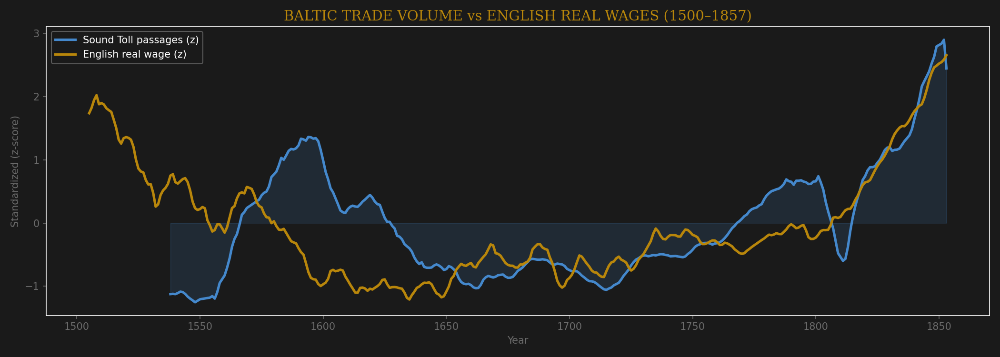
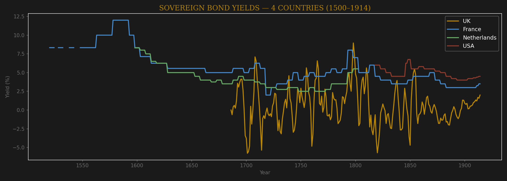
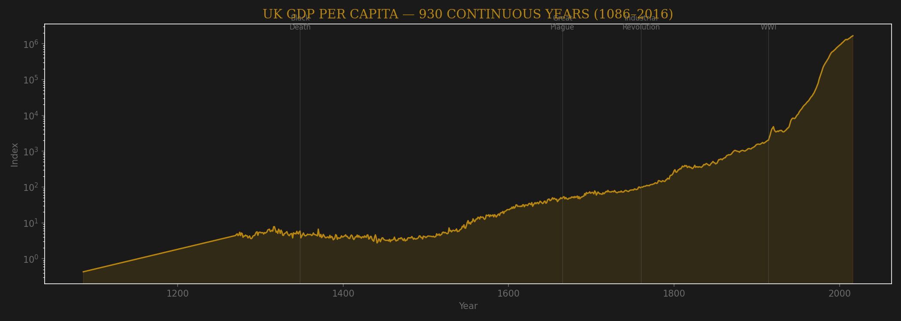
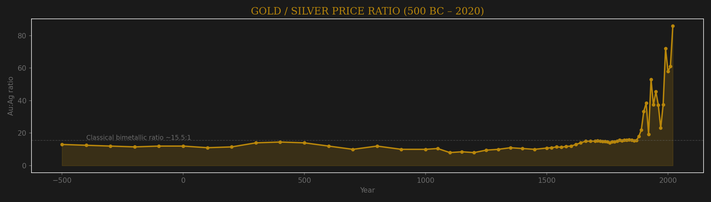
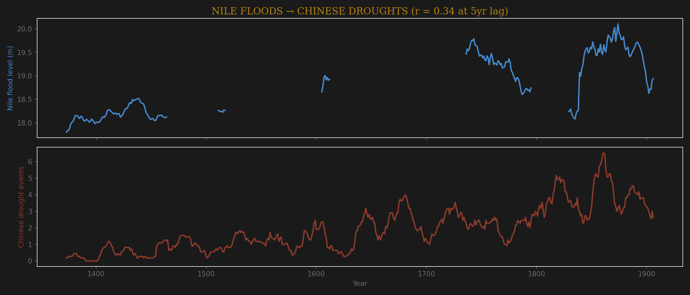
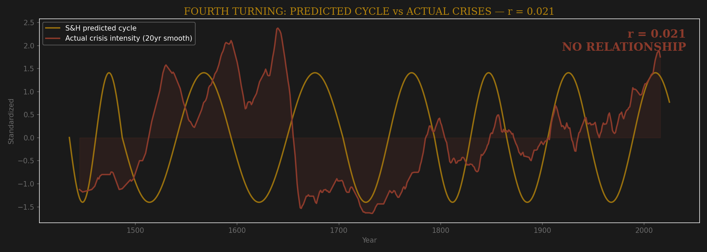

The longest documented financial series in existence. Stitched from Mesopotamian clay tablet loan records (2400 BC) through Greek temple deposits, Roman lending laws, Venetian prestiti, Florentine Monte, Dutch Republic government bonds, the Bank of England (1694), and consols.

Log-linear decline from Sumerian 20-33% to modern 1-3%. The Early Medieval spike to 75% reflects the collapse of financial institutions after Rome — risk premium, not policy. Rate spikes lead state conflict by ~11 years (r = 0.27).
Staple grain prices in silver-equivalent from the Babylonian Astronomical Diaries (384 BC) through medieval European wheat to 1954. Below: volcanic eruption intensity (VEI). The physical channel is clear — eruptions cause volcanic winters that kill harvests.

The strongest cross-civilization signal in the dataset. Eruptions spike grain prices on both sides of Eurasia at the same time. The physical forcing channel is real and transcontinental.
When did Europe pull ahead of Asia in living standards? Daily wages in grams of silver for unskilled laborers across 5 cities.

The gap opened gradually after 1600, not suddenly. Amsterdam was richer than London until ~1700. Istanbul near parity with London in the 1450s. London wages correlate with New World silver inflows (r = 0.64) and Sound Toll trade volume (r = 0.53). The divergence is entangled with Atlantic trade expansion.
The denarius lost 97% of its silver content over 500 years — from 97% fine (Republic) to 2.5% (Gallienus, 268 AD). One of the clearest debasement-to-inflation episodes in history.

2.15 million ship passages through the Danish Sound (1497–1857) vs English real wages. Standardized and smoothed.

Strong co-movement but largely a shared upward trend — they co-evolved with Early Modern growth. No strong directional causation. Baltic grain supply does inversely correlate with European wheat prices though — supply-side causation in the grain market is real.
Government borrowing costs from Dutch Republic bonds (1600), French rentes, British consols, and US treasuries.

The Netherlands led the financial revolution — lowest rates in Europe from 1600. Britain converged after the Glorious Revolution (1688). France was persistently higher (political risk premium). The US started high and converged after the Civil War.
The longest continuous GDP estimate for any country.

Flat for 700 years. Then exponential. The Industrial Revolution is the most dramatic structural break in the entire dataset — nothing in the preceding seven centuries predicted it. The Black Death (1348) actually raised per-capita income by killing a third of the population.

Stable at ~12-15:1 for two thousand years (the classical bimetallic ratio). Then silver collapsed after 1870 (demonetization, industrial production). The ratio hit 86:1 by 2020. The 2,500-year stability is remarkable — a physical constant of monetary systems until industrial mining broke it.
A teleconnection across 5,000 miles. High Nile floods in Egypt predict drought events in China 5 years later.

El Niño strengthens the Indian Ocean monsoon (more Nile flooding from Ethiopian highlands) while disrupting the East Asian monsoon (more Chinese droughts). The direction is physically plausible and the lag structure suggests low-frequency climate oscillation.
Strauss & Howe claim an ~80-year cycle of crisis in Anglo-American history. We tested their sine-wave prediction against independently-compiled crisis intensity.

The predicted cycle has no relationship with actual crises. The "Awakening" phase is actually more crisis-intensive than the "Crisis" phase (18.3 vs 16.4, p = 0.15). War clustering in "Crisis" turnings (79% vs 62%) is circular — they drew the boxes around wars they already knew about. The real cycles are solar (~11yr, ~60yr, ~200yr), not generational (~80yr).
The dominant signal across 4,600 years of data is physical forcing through agriculture. Solar minima → cooling → harvest failure → grain price spike → real wage collapse → political instability → war. The chain takes 5-15 years. It works across civilizations simultaneously — volcanic eruptions spike grain prices on both sides of Eurasia.
The Great Divergence was gradual (post-1600), entangled with Atlantic trade. The Price Revolution hammered real wages 45%. Interest rates show a 4,400-year secular decline. The Fourth Turning is noise.